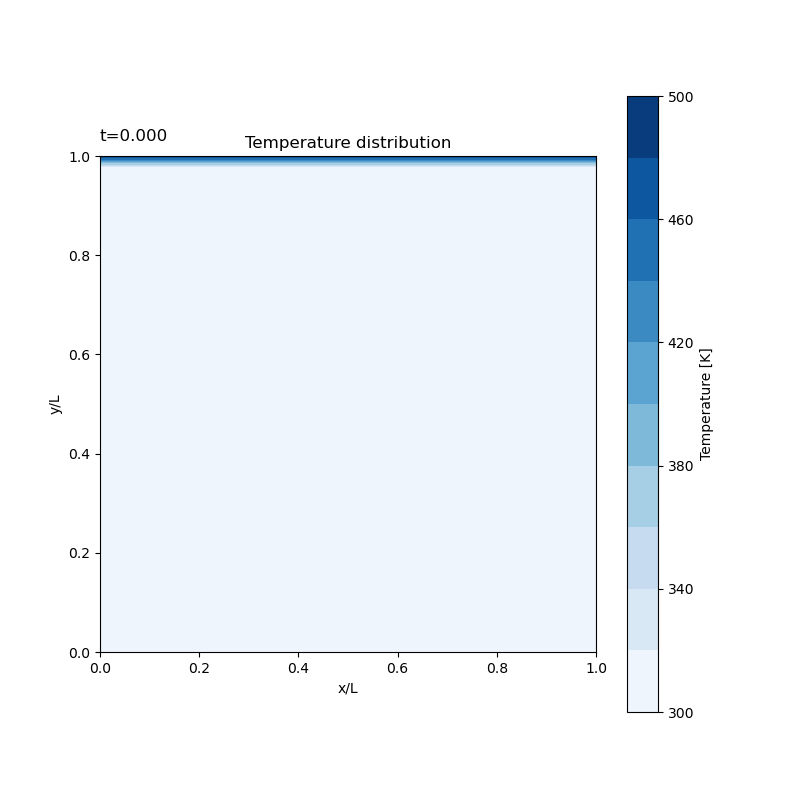

This lesson covers programs that solve the 2D unsteady heat conduction equation using both explicit and implicit methods.
2duExpAns.py)The temperature at the current time step is calculated directly from the known temperatures of the previous time step.

# ... (Parameter & Grid Setup) ...
# Time step loop
for n in range(NO):
# Store data for animation at specified stride
if(np.mod(n,ST)==0):
tmp=cp.copy(T)
Ts.append(tmp)
# Loop through all internal grid points
for j in range(1,N+1):
for i in range(1,N+1):
# T[j,i] is calculated using temperatures from the previous step, To.
# This is a direct calculation for each cell.
T[j,i] = (ce[i]*To[j,i+1]+cw[i]*To[j,i-1]+cn[j]*To[j+1,i]+cs[j]*To[j-1,i]+(co[j,i]-ce[i]-cw[i]-cn[j]-cs[j])*To[j,i] ) / co[j,i]
# Update the temperature of the previous step for the next calculation
To=cp.copy(T)
# ... (Visualization & Animation) ...
2duImpAns.py)This method formulates a system of linear equations for the unknown temperatures at the current time step and solves it iteratively.
# ... (Parameter & Grid Setup, including 'cd' coefficient) ...
# Time step loop
for n in range(NO):
# Store data for animation
if(np.mod(n,ST)==0):
tmp=cp.copy(T)
Ts.append(tmp)
# Inner loop for iterative convergence at the current time step
flg = 1
while flg == 1:
flg=0
for j in range(1,N+1):
for i in range(1,N+1):
# T[j,i] is calculated using the temperatures of the previous step (To)
# and the predicted temperatures of the current step (Tp).
T[j,i] = (ce[i]*Tp[j,i+1]+cw[i]*Tp[j,i-1]+cn[j]*Tp[j+1,i]+cs[j]*Tp[j-1,i]+co[j,i]*To[j,i] ) / cd[j,i]
# ... (Convergence check between T and Tp) ...
Tp=cp.copy(T) # Update prediction
# Update the temperature of the previous step for the next time step
To=cp.copy(T)
# ... (Visualization & Animation) ...
このレッスンでは、2次元の非定常熱伝導方程式を、陽解法と陰解法で解くプログラムを扱います。
2duExpAns.py)現在のタイムステップの温度を、計算済みの前ステップの温度分布のみから直接計算します。
# ... (パラメータと格子の設定は省略) ...
# 時間発展ループ
for n in range(NO):
# 指定した間隔でアニメーション用のデータを保存
if(np.mod(n,ST)==0):
tmp=cp.copy(T)
Ts.append(tmp)
# 全ての内部格子点をループ
for j in range(1,N+1):
for i in range(1,N+1):
# 前のステップの温度 To を使って現在のステップの T[j,i] を計算
# 各セルについて直接的な計算を行う
T[j,i] = (ce[i]*To[j,i+1]+cw[i]*To[j,i-1]+cn[j]*To[j+1,i]+cs[j]*To[j-1,i]+(co[j,i]-ce[i]-cw[i]-cn[j]-cs[j])*To[j,i] ) / co[j,i]
# 次の計算のため、前ステップの温度を更新
To=cp.copy(T)
# ... (可視化とアニメーション化) ...
2duImpAns.py)現在のタイムステップの未知の温度について連立方程式を立て、それを反復計算で解きます。
# ... (パラメータと格子の設定、係数'cd'を含む) ...
# 時間発展ループ
for n in range(NO):
# アニメーション用データを保存
if(np.mod(n,ST)==0):
tmp=cp.copy(T)
Ts.append(tmp)
# 現ステップ内での収束計算のための内部ループ
flg = 1
while flg == 1:
flg=0
for j in range(1,N+1):
for i in range(1,N+1):
# 前ステップの温度(To)と、現ステップの推測値(Tp)を使って T[j,i] を計算
T[j,i] = (ce[i]*Tp[j,i+1]+cw[i]*Tp[j,i-1]+cn[j]*Tp[j+1,i]+cs[j]*Tp[j-1,i]+co[j,i]*To[j,i] ) / cd[j,i]
# ... (T と Tp の収束判定) ...
Tp=cp.copy(T) # 推測値を更新
# 次の時間ステップのため、前ステップの温度を更新
To=cp.copy(T)
# ... (可視化とアニメーション化) ...